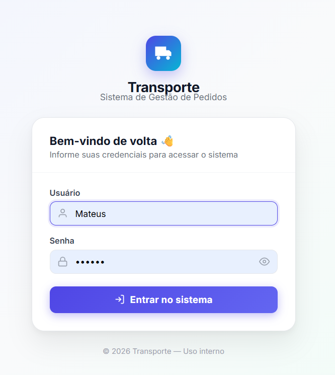
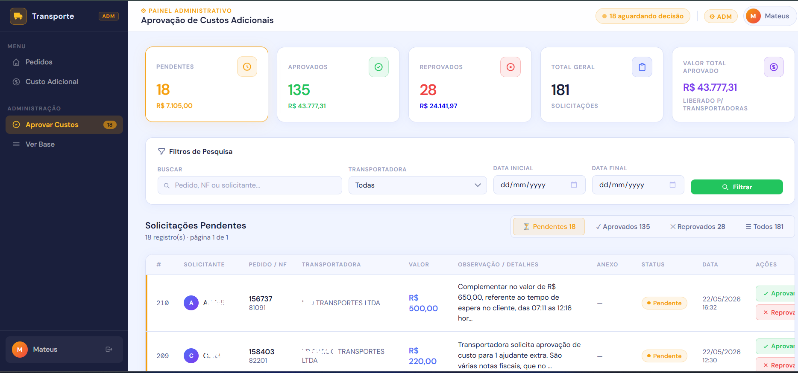
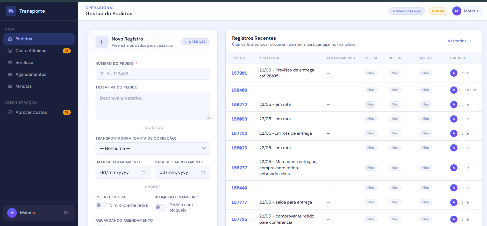

O portal centraliza informações de pedidos, tratativas, agendamentos, carregamentos, bloqueios, retiradas e situações que precisam de acompanhamento.
Portal web · Transporte · Power BI
Um portal operacional completo para o setor de transporte.
Sistema web desenvolvido para centralizar tratativas de pedidos, controle de transportadoras, custos adicionais, aprovações, registros operacionais e dados que alimentam automaticamente um Power BI gerencial da área de transporte.
Pedidos
tratativas e acompanhamento
Custos
aprovação e histórico
BI
indicadores automatizados

TRANSPORTE.PORTAL
acesso protegido por login
Operação
pedidos, prazos e tratativas
Gestão
dados para Power BI
Para equipes de transporte que precisam controlar pedidos, atrasos, prazos, custos adicionais, transportadoras e indicadores sem depender de planilhas, mensagens soltas ou controles paralelos.
Tratativas
Custos
Transportadoras
Power BI
Operação
Custos adicionais entram em fluxo de solicitação, análise, aprovação, reprovação, reenvio e histórico por usuário.
As informações registradas no portal alimentam análises gerenciais sobre transportadoras, pedidos em atraso, pedidos no prazo e desempenho operacional.
O desafio
O setor de transporte precisava sair do controle fragmentado e ganhar uma base única de operação.
Antes do portal, as informações de transporte ficavam dependentes de controles manuais, acompanhamento individual, consultas em sistemas e comunicação espalhada entre pessoas da operação.
Isso dificultava a visão gerencial sobre o que estava acontecendo: quais pedidos estavam em atraso, quais ainda estavam dentro do prazo, quais transportadoras estavam envolvidas, quais custos adicionais precisavam de aprovação e quais tratativas estavam em andamento.
O objetivo foi criar um ambiente web para registrar a operação, controlar acessos, organizar os dados e gerar uma base confiável para análise no Power BI.
A solução
Um portal web conectado à rotina real do transporte.
O sistema foi desenvolvido para o uso diário do setor, reunindo em uma única plataforma as principais etapas da rotina: cadastro de tratativas, atualização de pedidos, consulta da base, solicitação de custos adicionais e aprovação administrativa.
Cada registro feito no portal passa a compor uma base operacional que pode ser analisada posteriormente, permitindo criar indicadores de atraso, prazo, transportadora, custo, responsável, volume de tratativas e performance da área.
Principais capacidades
- Login com controle de sessão.
- Cadastro e atualização de tratativas de pedidos.
- Consulta da base operacional.
- Solicitação de custos adicionais com anexos.
- Aprovação e reprovação de custos por perfil administrativo.
- Histórico e filtros por pedido, usuário, transportadora e status.
- Base estruturada para Power BI gerencial.
Experiência do portal
O portal foi pensado para ser operacional no detalhe e gerencial na visão.
As telas mostram os principais pontos da solução: acesso ao sistema, painel administrativo de aprovação de custos e tela principal do portal com a rotina completa do setor.
01 · Acesso protegido
Entrada no portal por login e senha.
O sistema foi criado com controle de acesso para proteger a operação e separar a experiência conforme o perfil do usuário. A partir do login, cada pessoa entra no ambiente adequado para registrar, consultar ou aprovar informações.
02 · Aprovação de custos
Custos adicionais com análise, aprovação e histórico.
O painel administrativo permite visualizar solicitações de custo adicional, filtrar registros, revisar documentos, aprovar, reprovar e manter o histórico da decisão. Isso reduz decisões informais e melhora o controle financeiro da operação.

03 · Portal operacional
Tratativas, base, agendamentos, custos e atalhos em um único ambiente.
A tela principal reúne a rotina operacional do setor de transporte, permitindo cadastrar pedidos, acompanhar registros recentes, acessar base, custos adicionais, aprovações, agendamentos e outros módulos conectados à operação.

Módulos do portal
Um sistema modular para registrar operação, controlar exceções e gerar dados confiáveis.
A força do portal está em transformar a rotina do setor em uma base organizada. Cada módulo registra uma parte importante da operação e alimenta a visão gerencial.
Gestão de pedidos e tratativas
Cadastro e atualização de pedidos com observações, carta de correção, agendamento, data de carregamento, bloqueio financeiro, retira e aguardando agendamento.
Base operacional
Consulta dos registros com filtros por pedido e usuário, permitindo acompanhar o histórico das tratativas registradas.
Custo adicional
Solicitação de custos por pedido ou nota fiscal, transportadora, valor, observação e documento comprobatório.
Aprovação administrativa
Fluxo para aprovar, reprovar e reenviar custos adicionais, com totais por status, filtros, histórico e separação por perfil de acesso.
Indicadores para Power BI
Os registros do portal formam uma base para analisar transportadoras, atrasos, pedidos no prazo, custos, responsáveis e desempenho da operação.
Power BI gerencial
A operação registrada no portal vira análise gerencial automaticamente.
O sistema não serve apenas para registrar dados. Ele cria uma base estruturada para alimentar um Power BI gerencial, permitindo acompanhar tudo que está sendo feito no setor de transporte.
A análise pode mostrar transportadoras mais acionadas, pedidos em atraso, pedidos ainda dentro do prazo, custos adicionais pendentes, aprovados ou reprovados, volume de tratativas por usuário e pontos de atenção da operação.
POWERBI.DATASET
transporte gerencial
Análise por transportadora
Pedidos em atraso ou no prazo
Custos adicionais por status
Antes e depois
- Informações espalhadas em controles manuais e conversas.
- Dificuldade para saber o que estava atrasado ou dentro do prazo.
- Custos adicionais tratados sem fluxo centralizado.
- Pouca rastreabilidade sobre quem registrou ou aprovou uma informação.
- Base gerencial dependente de consolidação manual.
- Tratativas de pedidos registradas em sistema web.
- Base única para consulta, filtros e acompanhamento.
- Fluxo de custo adicional com aprovação e histórico.
- Controle por login e perfil de usuário.
- Dados estruturados para alimentar Power BI gerencial.
Resultado
O setor de transporte passou a ter operação registrada, custos controlados e gestão baseada em dados.
O portal deu ao setor uma base mais confiável para acompanhar pedidos, tratativas, transportadoras, custos adicionais e pendências operacionais.
Com a alimentação automática do Power BI, a gestão consegue analisar o que está sendo feito, identificar pedidos em atraso, acompanhar o que ainda está no prazo e enxergar melhor a performance das transportadoras.
Pedidos, tratativas e custos concentrados em um ambiente web.
Registros vinculados a usuários, status, datas e decisões.
Base operacional preparada para análise em Power BI.
Menos consolidação manual e mais acesso direto à informação.
Projeto parecido?
Seu setor ainda controla transporte em planilhas, mensagens e relatórios manuais?
Um portal web pode centralizar a operação, organizar aprovações, registrar tratativas e alimentar indicadores gerenciais automaticamente.